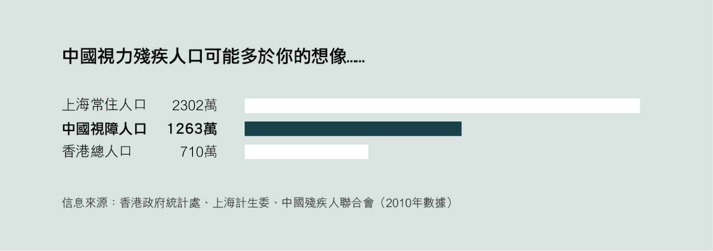

中國有五百萬盲人[註1]， 接近香港的總人口。 加上弱視，總數超過一千二百萬[註2]。
盲人走丟是舊聞，盲貓失蹤纔是新聞：
- 經濟日報：偷貓賊出沒 書店盲貓福仔被盜
- 文匯報：黑褸賊書局偷盲貓 片段網上瘋傳
- 東方日報：盲貓「福仔」被尋回 主人喜與愛貓重聚
- 蘋果日報：被偷5日 疑賊人送往愛協 盲貓「福仔」回家了
等等……
盲人也可以用電腦，也會讀新聞。他們看不見，但是聽得到，他們上網用讀屏軟件，屏幕上的字詞，一個個去聽。
現在新聞界，流行信息圖，把大段文字轉化成圖表，方便讀者閱讀。 但正所謂君之蜜糖，彼之砒霜，普通人愛看的信息圖、可視化，對於盲人的讀屏軟件，則是巨大的障礙。
那麼，作爲新聞人，我們可以怎樣照顧盲人的信息需求呢？
盲人怎麼讀新聞
普通人閱讀靠視覺，是「並行」的——你看一眼網頁界面，就知道菜單在哪、內容在哪、哪個是鏈接、哪個可以點。
聽覺是「串行」的，一個盲人如果想「讀完」一個網頁，要讓讀屏軟件從第一個元素（按鈕、菜單選項等）讀起，然後一個一個元素讀下去。
如果想體驗讀屏軟件，在 OS X 或 iPhone 下，可以試用 「VoiceOver」， 這是蘋果內置的讀屏軟件。 閉上眼睛，嘗試一下盲人使用電子產品的方式，試試做一些平常覺得輕而易舉的事情：瀏覽網頁、發發微博，等等。
Windows 可以下載「爭渡讀屏」， Android用戶可以試試內置的Talkback。
給圖像加上詳細的文字描述（alt）
讀屏軟件讀不了數據圖表，於是我們要爲視障讀者撰寫圖像的替代文字描述，具體而言，就是HTML中IMG元素的alt屬性。 對於讀屏軟件的用戶，alt的內容會被完整讀出。
替代說明應該儘可能簡短，但是能夠讓沒有看到圖的讀者都能理解內容。
比如，不要寫「中國GDP數據可視化」，而是寫「中國GDP近年快速增長，2000年爲1.2千億美元，2005年爲2.3千億，2010年爲5.9千億。」
替代說明有個額外的好處：利於搜索引擎處理。搜索引擎蒐集數據，是靠大量「爬蟲」程序，一個網頁一個網頁地檢索內容。爬蟲和盲人一樣，只能「看到」文字，無法閱讀圖像，所以，如果一篇文章的重要信息由圖像呈現，又沒有替代說明，則搜索引擎也看不到這些信息，從而讓用戶更難發現你的文章。
數據可聽化（Sonification）
可聽化是與可視化相似的概念。我們做可視化，是因爲大多數人對數字沒有直覺，難以理解，但是我們對顏色、尺寸、方向有直覺——於是，將數字轉化爲圖像，能夠讓讀者更容易解讀數據。對於依賴聽力的盲人，我們則可以用「可聽化」。
聲音可以操縱的變量有：
- 響度，即大聲還是小聲；
- 頻率，即高音還是低音；
- 音色，即泛音的構成；
- 長度，即很長還是很短。
如果將數據與上述一個或幾個變量連接，就能構成一個「可聽化」作品。
一個例子是Listen to Wikipedia。它會實時監測維基百科的改動，然後將每次改動化爲聲音，改動越大，聲音頻率越高；音色代表改動類型——敲擊樂是增訂，絃樂是刪減。這個作品本身對盲人可能用處不大，但是這個技術思路可以用在新聞報道上。
數據可觸化
盲人不止有聽覺，也有觸覺。如果我們將數據化作實際存在的物體，則盲人可以通過觸覺感知。在這個方向，探索的人比較少，偶爾見到零星的嘗試。
比如，西班牙記者 Samuel Granados López 用樂高積木做過一個地圖，用以標識美洲各國的移民流入、流出量：
展望：數據新聞無障礙
過去，新聞的主要呈現方式是文字，輔以照片、插圖。盲人用了讀屏軟件，也能獲取大部分的信息。
現在，「數據新聞」興起，信息圖、可視化流行，非數據的新聞報道也講求「視覺」「互動」。
新聞人考慮的大多是報道網頁在手機上能不能看、用觸屏好不好控制，不太考慮盲人用戶能否閱讀、色盲用戶會否迷惑、殘障用戶能否使用。
我們在呈現方式上發足狂奔之時，不應該忽略少數有特別需求的用戶。 有的用戶看不到屏幕、有的用戶用不了鼠標，他們仍然有信息需求，仍然可以是我們的讀者。
我們在製作每條新聞報道的時候，不止要考慮如何讓大多數用戶迅速理解，也要考慮如何保證每個用戶對新聞內容能有最基本的了解。
從今天開始，請給你的信息圖加上alt吧！
數據來源
- 世界衛生組織
- 中國盲人協會
- 殘疾人口數據來自： 殘疾人聯合會
- 上海人口數據來自： 上海市人口和計劃生育委員會
- 香港人口數據來自： 香港政府統計處